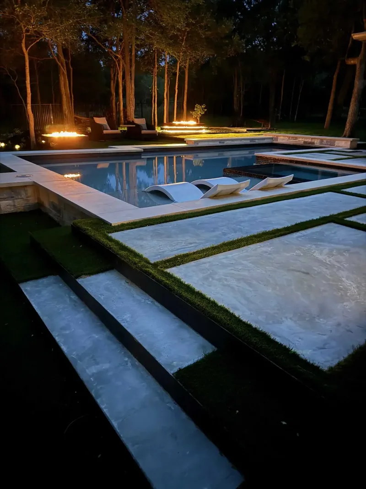
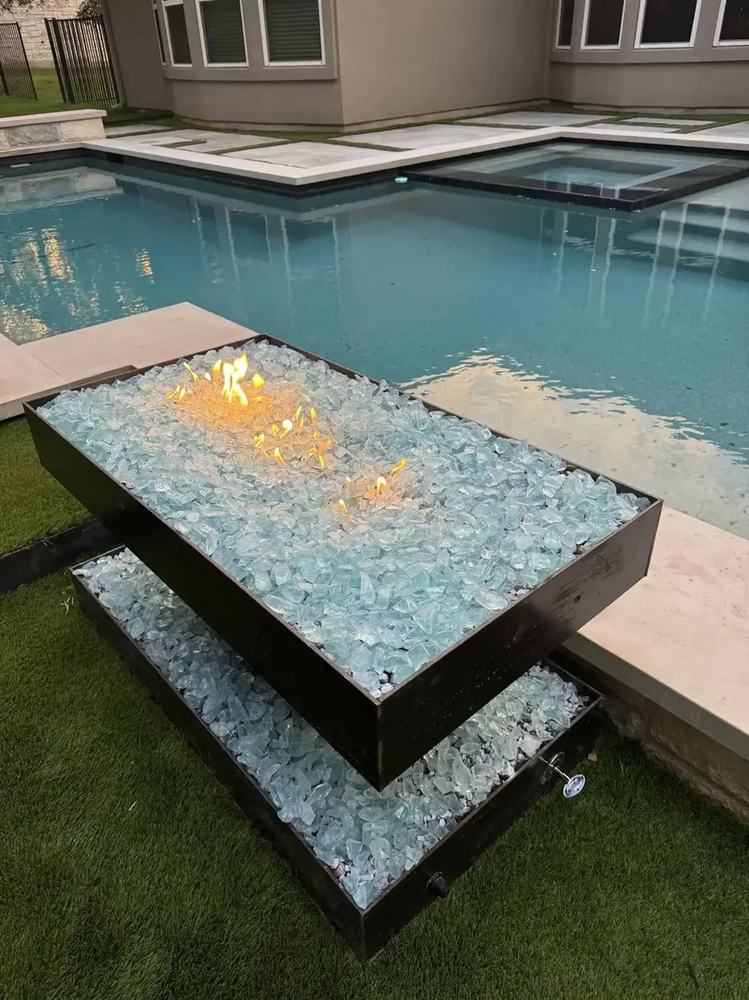
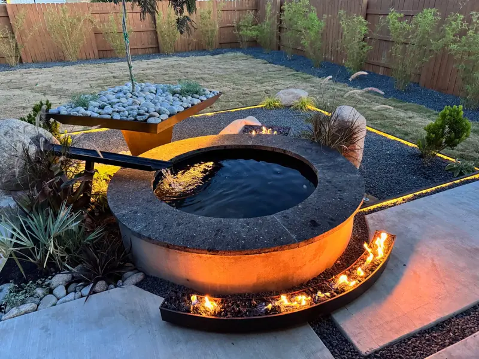

Choose a design-build firm that draws the pool, the fire feature, and the yard on one plan, holds one contract for the design and the build, and can show you finished pools and fire features it built. Then check the trades: in Texas, gas piping is plumbing and takes a licensed plumber, and the pool’s electrical work takes a licensed electrician. Red Agave Landscape designs and builds pools, water features, and custom fire pits in Austin, TX. This post gives seven checks, with three of our builds as examples.

How Do You Choose a Design-Build Firm for a Pool and Fire Feature?
Run seven checks.
- One plan: are the pool, the fire, the deck, the planting, and the lighting on one drawing?
- One contract: does one firm hold the design and the build?
- Built work: has the firm built both water and fire, and can it show the build photos?
- Gas: who runs the gas line, and what is the plumber’s license number?
- Power: who wires the pool light and the pump?
- City rules: who pulls the permit, and where do the pool barrier and the fire sit on the plan?
- Paper: is the scope in writing, with materials, a start date, and a finish date?
What Does Design-Build Mean?
One contract. The Design-Build Institute of America calls the single contract for both design and construction the basic difference between design-build and every other way of delivering a project. In the other methods, design and construction are bought under separate contracts.
| Question | One design-build firm | Design and construction bought separately |
|---|---|---|
| How many contracts? | One, for design and construction | Separate contracts for design and for construction |
| Who do you call? | One firm, from the first visit to the final walkthrough | The designer for the plan, and each builder for its part |
| Who answers for both the plan and the build? | The same firm | Different firms |
At Red Agave the owner draws the plan and our own crew builds it. Gas and electrical panel work go to licensed trades.
Why Draw the Pool and the Fire on One Plan?
Because each one sets the other’s place. In Cedar Creek, southeast of Austin, a yard took shape around a pool under construction. Our plan set large concrete pavers in turf on two sides of the L-shaped pool, put a square fire pit at the corner of the water, and put a second, linear fire pit in a dark court behind.


The built yard follows the drawing. The square fire pit floats on a recessed base at the pool’s edge, filled with aqua fire glass. The long one sits in dark gravel, filled with amber glass and lit from underneath. Both are welded steel, made by our own crew, and the gas lines run in the ground to each one. A gas line that runs under paving has to be routed before the paving is poured, which is why both belong on one plan. See how the pavers and turf were built and the Cedar Creek project.
Who Should Run the Gas and the Power?
Licensed trades. It is state law.
- Gas. The Texas Plumbing License Law, Chapter 1301 of the Occupations Code, defines plumbing to include piping used to supply or distribute gas, and it bars anyone from doing plumbing without the proper license. A gas line to a fire pit is plumbing.
- Power. The Texas Department of Licensing and Regulation says anyone who performs non-exempt electrical work in Texas must be licensed and must do that work through a licensed electrical contractor. Wiring a pool pump and a pool light is electrical work.
Ask the firm for the names and license numbers before you sign. TDLR’s license search is public.
What Does the City of Austin Ask For?
A permit for the pool, a barrier that meets the pool code, and care with where a fire sits.
- Pool permit. Austin Development Services lists the work exempt from building permits. The only swimming pool on the list is one that is prefabricated and less than 24 inches deep. An inground pool is not on it.
- Pool barrier. The city’s fencing regulations say a fence used as a swimming pool barrier must follow the Swimming Pool and Spa Code in the city’s Land Development Code.
- Fire. Austin Fire’s recreational fire rules for a home say a wood recreational fire must be at least 25 feet from structures and other combustible materials, no more than 3 feet across and 2 feet high, and attended by an adult.
The fire pits in this post burn gas. Ask the firm which fuel it is designing for, and where the fire sits on the plan.
What Should the Firm Be Able to Show You?
Finished work for both halves of the job, and the build behind it. Ours:
- A pool. In East Austin we built an inground pool with natural stone coping and a submersible LED light, between a teak deck and a glass-walled screened porch. The deck meets the coping at the same height. See the East Austin project.
- Fire beside a pool. In Cedar Creek, two floating welded steel fire pits, one at the edge of the water.
- Water and fire built as one piece. In Southeast Austin we built a round water feature the way a pool is built, with a concrete shell, a plaster interior finished black, and a sand pool filter. A floating steel fire pit curves along its front, and a second fire pit hangs between two boulders. See how it was built.


Red Agave is the only company in Austin that builds floating welded steel fire pits and fire pits carved into boulders. See our pools and custom fire pits pages. We build from Southeast Austin south to Buda and Kyle.
What Should Be in Writing Before You Sign?
The scope, the materials, and the dates. The Texas Attorney General’s guide on home improvement contracts tells homeowners to:
- Get bids in writing, with detail on exactly what will be done and the kinds of materials
- Ask for references, and ask to see finished work
- Insist on a written contract that says what the contractor will do, when the work starts, and when it will be finished
- Hold the final payment until the work is complete and you have inspected it
At Red Agave you approve the materials, the plants, and every detail in writing, with an itemized quote, before construction starts. Every project starts with a free consultation, and the CAD plan is included. For pricing, see our pool cost guide.
What Sources Did We Use?
We read each of these in November 2026.
- Design-Build Institute of America, What Is Design-Build?
- Texas Occupations Code, Chapter 1301, Plumbing License Law, Sections 1301.002 and 1301.351
- Texas Department of Licensing and Regulation, Electricians
- City of Austin, Austin Development Services, Work Exempt from Building Permits and Fencing Regulations
- City of Austin, Austin Fire, Recreational Fire Safety
- Office of the Attorney General of Texas, How to Avoid Home Improvement Scams
Questions We Hear
What is a design-build firm?
A firm that holds one contract for both the design and the construction. The Design-Build Institute of America calls that single contract the basic difference between design-build and other ways of delivering a project.
Who can install a gas line for a fire pit in Texas?
A licensed plumber. Chapter 1301 of the Texas Occupations Code defines plumbing to include piping that supplies gas, and it requires a license to do plumbing.
Does a pool need a permit in Austin?
Austin Development Services lists only a prefabricated swimming pool less than 24 inches deep as exempt from a building permit. An inground pool is not on the exempt list, and a fence used as a pool barrier must follow the city’s Swimming Pool and Spa Code.
Does Red Agave design and build both the pool and the fire feature?
Yes. The owner draws one plan for the pool, the deck, the fire, the planting, and the lighting, and our own crew builds it.